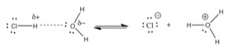
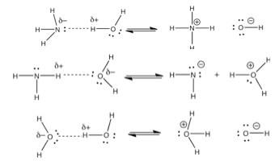
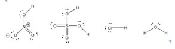
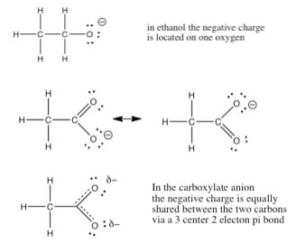
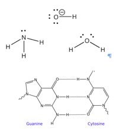
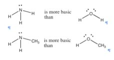

| Chapter 7.2: The universe of chemical reactions: |
|
7.1 Reactions |
One important point to remember is that, whatever the reaction type, real reactions are systems composed of reactants, products, and the environment in which the reaction occurs. Reactants can behave quite differently in the gaseous phase from how they behave in a aqueous or a non-aqueous system, or at high or low temperature. In the next chapter we will consider whether (thermodynamics) and how fast (kinetics) a particular reaction occurs under specific conditions, and this will, in turn, lead us to consider equilibrium and non-equilibrium systems. |
Question to answer:
Questions to ponder:
|
Acid-Base reactions: A guide for beginners Let us begin with the reaction type that we saw at the end of the last chapter, the reaction of HCl with water, a classic acid-base reaction. To understand how these types of reactions are related, we need to learn how to identify their essential and common components. Our first hurdle is the fact that the terms acid and acidity (and to a lesser extent, bases and basicity) have entered the language of everyday life. Most people have some notion of acids and acidity. Examples of common usage include: acid rain, stomach acid, acid reflux, acid tongue, etc. You might hear someone talk about wine that tastes acidic, by which (we think) they mean sour – and most people would understand that the wine tastes like vinegar (which contains acetic acid). You have also probably heard or even learned about measurements of acidity that involve “pH”, but what is pH exactly? What is an acid, and why would you want to “neutralize” it? Are acidic things “bad”? Do we need to avoid them at all costs and under all circumstances? While the term “base” is less common, you are likely to be familiar with materials that are basic in the chemical sense (not in the normal language sense of being fundamental). Bases are often called alkalis – as in alkaline batteries or alkali metals, they are slippery to the touch and bitter tasting. Arrhenius acids and bases: In the Arrhenius model an acid is a compound that, when dissolved in water, dissociates at the molecular level to produce a proton (H+) and a negatively charged ion (an anion). In fact, naked protons (H+) do not roam around in solution – they are always associated with at least one, and more likely multiple water molecules. Generally, chemists use a shorthand for this situation, either referring to the H+ in aqueous solution as a hydronium ion (denoted as H3O+) or even more simply as H+ , but do not forget, this is a short-hand, H+ stands for aqueous H+ or H+(aq). An example of an Arrhenius acid reaction is: HCl(g)
+ H2O ↔ H3O+ (aq) + Cl–(aq), But this is really quite a weird way to present the actual situation, since the HCl molecule does not interact with a single water molecule, but rather interacts with water as a solvent. When hydrogen chloride (HCl) gas is dissolved in water, it dissociates into H+ (aq) and Cl– (aq) almost completely. For all intents and purposes there are no HCl molecules in the solution. An aqueous solution of HCl is known as hydrochloric acid, which distinguishes it from the gas hydrogen chloride. This complete dissociation is a characteristic of what are known as strong acids (but not all acids are strong acids!) An Arrhenius acid-base reaction occurs when a dissolved (aqueous) acid and a dissolved (aqueous) base are mixed together. The product of such a reaction is usually said to be a salt plus water and the reaction is often called a neutralization reaction; the acid “neutralizes” the base, and vice versa. The equation may be written like this: |
Question to answer:
|
Brønsted-Lowry Acids and Bases. While the Arrhenius acid-base model is fairly easy to understand, it is very restrictive in terms of the kinds of reactions to which it applies. So rather than continuing down this road, chemists found that they needed to expand their model of acids and bases and how they react. The first of these expansions was the Brønsted-Lowry model. In the Brønsted-Lowry model, an acid is characterized as a proton (H+) donor and a base as a proton acceptor. If we revisit the reactions we looked at earlier, but now in terms of the Brønsted-Lowry acid-base model we see that HCl is the proton donor, it gives away H+ and water is the proton acceptor. In this scheme, HCl is the acid and water is the base. HCl(g) + H2O(l) ↔ H3O+
(aq) + Cl–(aq) The resulting species are called the conjugate acid (so H3O+ is the conjugate acid of H2O), and the conjugate base (Cl– is the conjugate base of HCl). This is because H3O+ could (and generally does) donate its H+ to another molecule, most often another water molecule, while Cl– can accept an H+. A major (and important difference) between the Brønsted-Lowry and Arrhenius acid base models is that a Brønsted-Lowry acid must always have an accompanying base to react with - the two are inseparable. A proton donor has to have something to donate the protons to (a base), and in this case it is water. Remember that bond breaking always requires energy, while bond formation always releases energy. A reaction in which the only thing that happens is the breaking of a bond (for example the Cl–H bond in HCl) will always requires the input of energy. Acid-base reactions are typically exothermic; they release energy to the surroundings) and that released energy is associated with the interaction between the H+ and the base. That is the proton does not drop off the acid and then bond with the base, instead the acid–H bond starts to break as the base–H bond starts to form. One way that we can visualize this process is to draw out the Lewis structures of the molecules involved and see how this proton is transferred. |
| Essentially a Brønsted-Lowry acid base reaction involves the transfer of a proton from an acid to a base, while leaving the original bonding electrons behind. |  |
|
| We will return to a discussion of what makes a compound acidic and/or basic shortly. At the moment, we have two acid-base reactions - one in which water is the acid and one where the water is the base. How can this be? How can one molecule, water, be both an acid and a base, apparently at the same time? This is due to the water molecule’s unique structure. In fact, water does react with itself - one molecule acting as an acid and one as a base. |  |
H2O(l) + H2O(l) ↔
H3O+ (aq) + –OH(aq) |
Question to answer:
Questions to ponder:
|
How to spot an acid Moving on from water, can we predict whether a compound would be an acid, a base, or neither? As we have seen, many properties of materials can be predicted by considering their molecular structure. |
 |
Now let us recall that the definition of electronegativity is a measure of the ability to attract (and retain) electrons. It therefore makes sense that a negatively-charged electronegative atom, like chlorine or oxygen, will be more stable than a negatively-charged, but less electronegative atom, such as carbon. |
Question to answer:
Questions for later:
|
| An aside: Strong, weak, concentrated, dilute acids and bases. One problem (that we have seen time and again) is that in chemistry (and science) we often use words with a very specific meaning and intent, but sometimes they have a different meaning in real life. The words we use to describe solutions of acids and bases fall into these categories and are easily mixed up. We use the term strong to refer to those acids that ionize completely in water, and weak acids for those that are only partially ionized (see chapter 8 for more information on why). That is, strong and weak are used to describe an intrinsic property of the acid (or base). The terms dilute and concentrated are used to describe the concentration of the acid in water. So we could have a dilute solution (say 0.1 M) of the strong acid hydrochloric acid, or a concentrated solution (say 10 M) of the weak acid acetic acid. In contrast, in everyday life we tend to use the terms strong and weak to describe the concentration of solutions, for example if you say “this tea is very weak” or “I like my coffee strong” - what you are really saying is that you like a lot of “stuff” dissolved in the solution you are drinking. It is important to remember this difference, and understand that the context in which words are used can often change their meaning. |
Question to answer:
|
| Factors that affect acid strength. In chapter 8 we will discuss the quantification of acid and base strength, but before that, let us take a look at the factors that might affect the strength of an acid. As we have already seen, the ability of the conjugate base to hold on (stabilize) the electron pair is crucial. There are several ways this is accomplished. The simplest is that the acidic H is attached to an electronegative atom such as O, N or a halogen. However there is a wide range of acidities for “oxy acids” (in particular), and most of these differences are due to the number of places that the extra electron density can be stabilized. |
 |
| A fairly simple example is the difference between
ethanol (CH3CH2OH) and acetic acid (CH3COOH).
Acetic acid is about 10 billion (1010) times more
acidic than ethanol, the reason is being the conjugate base (acetate)
is able to stabilize the negative charge to be stabilized on
TWO oxygens instead of one. |
How to spot a base There is an equally simple method to figure out which compounds are potential bases. Let us take a look at some common bases. The first bases that most people encounter are the metal hydroxides such as NaOH, KOH, Mg(OH)2 etc. The metal ions, generated when these compounds dissolve in water, typically do not play any role in acid base reactions. The base in these compounds is the hydroxide (–OH). Another common class of bases are molecules, like NH3, that contain nitrogen. There many kinds of such “nitrogenous bases” some of which play an critical role in biological systems. |
 |
For example, the “bases” in nucleic acids (DNA and RNA) are basic because they contain nitrogen. Let us not forget that water is also basic, and can accept a proton. So what is the common
structural feature in bases? Well, if an acid is the species with
a proton to donate, then the base must be able to accept a proton.
This means that the base must have somewhere for the proton to become
attached to – that
is, it must contain an non-bonded (lone) pair of electrons for the proton
to interact (bond) with. If we look at all our examples, we find that
indeed, all our bases have the necessary non-bonded pair of electrons.
Most common bases have either an oxygen or a nitrogen (with lone pairs
of electrons) acting as the basic center, and once you learn how to spot
the basic center, you can predict the outcome of a vast range of reactions – reactions
that you might otherwise be forced to memorize. In fact, it is often
the case that if you can identify the acidic and basic sites in the starting
materials you can predict the product, while ignoring the rest of the
molecule. |
| This effect parallels the increase in electronegativity across the row. The ability to allow an electron pair to bond with a proton (which is the same as accepting a proton) depends on how tightly that electron pair is held in by the donor atom. In fluorine, the most electronegative atom, the electrons are held ?so tightly – close to the atom’s nucleus that they are not available to bond with a proton. |  |
|
7.1
Reactions |
Question to answer:
|
| 28-Jun-2012 |